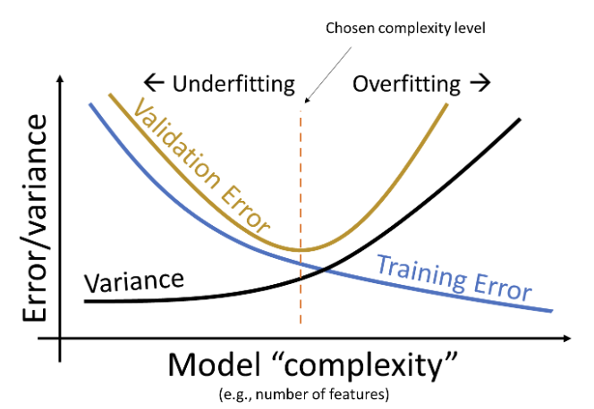

Recognize the need for validation and test sets to preview model performance on unseen data
Apply cross-validation to select model hyperparameters
Understand the conceptual basis for L1 and L2 regularization
At the end of the Feature Engineering lecture (Lecture 14), we arrived at the issue of fine-tuning model complexity. We identified that a model that’s too complex can lead to overfitting, while a model that’s too simple can lead to underfitting. This brings us to a natural question: how do we control model complexity to avoid under- and overfitting?
To answer this question, we will need to address two things: first, we need to understand when our model begins to overfit by assessing its performance on unseen data. We can achieve this through cross-validation. Secondly, we need to introduce a technique to adjust the complexity of our models ourselves – to do so, we will apply regularization.
16.1 Training, Test, and Validation Sets
From the last lecture, we learned that increasing model complexity decreased our model’s training error but increased its variance. This makes intuitive sense: adding more features causes our model to fit more closely to data it encountered during training, but generalize worse to new data it hasn’t seen before. For this reason, a low training error is not always representative of our model’s underlying performance - we need to also assess how well it performs on unseen data to ensure that it is not overfitting.
Truly, the only way to know when our model overfits is by evaluating it on unseen data. Unfortunately, that means we need to wait for more data. This may be very expensive and time-consuming.
How should we proceed? In this section, we will build up a viable solution to this problem.
16.1.1 Test Sets
The simplest approach to avoid overfitting is to keep some of our data “secret” from ourselves. We can set aside a random portion of our full dataset to use only for testing purposes. The datapoints in this test set will not be used in the model fitting process. Instead, we will:
Use the remaining portion of our dataset – now called the training set – to run ordinary least squares, gradient descent, or some other technique to fit model parameters
Take the fitted model and use it to make predictions on datapoints in the test set. The model’s performance on the test set (expressed as the MSE, RMSE, etc.) is now indicative of how well it can make predictions on unseen data
Importantly, the optimal model parameters were found by only considering the data in the training set. After the model has been fitted to the training data, we do not change any parameters before making predictions on the test set. Importantly, we only ever make predictions on the test set once after all model design has been completely finalized. We treat the test set performance as the final test of how well a model does.
The process of sub-dividing our dataset into training and test sets is known as a train-test split. Typically, between 10% and 20% of the data is allocated to the test set.
In sklearn, the train_test_split function of the model_selection module allows us to automatically generate train-test splits.
Throughout today’s work, we will work with the vehicles dataset from previous lectures. As before, we will attempt to predict the mpg of a vehicle from transformations of its hp. In the cell below, we allocate 20% of the full dataset to testing, and the remaining 80% to training.
Code
import pandas as pdimport numpy as npimport seaborn as snsimport warningswarnings.filterwarnings('ignore')# Load the dataset and construct the design matrixvehicles = sns.load_dataset("mpg").rename(columns={"horsepower":"hp"}).dropna()X = vehicles[["hp"]]X["hp^2"] = vehicles["hp"]**2X["hp^3"] = vehicles["hp"]**3X["hp^4"] = vehicles["hp"]**4Y = vehicles["mpg"]
from sklearn.model_selection import train_test_split# `test_size` specifies the proportion of the full dataset that should be allocated to testing# `random_state` makes our results reproducible for educational purposesX_train, X_test, Y_train, Y_test = train_test_split(X, Y, test_size=0.2, random_state=220)print(f"Size of full dataset: {X.shape[0]} points")print(f"Size of training set: {X_train.shape[0]} points")print(f"Size of test set: {X_test.shape[0]} points")
Size of full dataset: 392 points
Size of training set: 313 points
Size of test set: 79 points
After performing our train-test split, we fit a model to the training set and assess its performance on the test set.
import sklearn.linear_model as lmfrom sklearn.metrics import mean_squared_errormodel = lm.LinearRegression()# Fit to the training setmodel.fit(X_train, Y_train)# Make predictions on the test settest_predictions = model.predict(X_test)
16.1.2 Validation Sets
Now, what if we were dissatisfied with our test set performance? With our current framework, we’d be stuck. As outlined previously, assessing model performance on the test set is the final stage of the model design process. We can’t go back and adjust our model based on the new discovery that it is overfitting – if we did, then we would be factoring in information from the test set to design our model. The test error would no longer be a true representation of the model’s performance on unseen data!
Our solution is to introduce a validation set. A validation set is a random portion of the training set that is set aside for assessing model performance while the model is still being developed. The process for using a validation set is:
Perform a train-test split. Set the test set aside; we will not touch it until the very end of the model design process.
Set aside a portion of the training set to be used for validation.
Fit the model parameters to the datapoints contained in the remaining portion of the training set.
Assess the model’s performance on the validation set. Adjust the model as needed, re-fit it to the remaining portion of the training set, then re-evaluate it on the validation set. Repeat as necessary until you are satisfied.
After all model development is complete, assess the model’s performance on the test set. This is the final test of how well the model performs on unseen data. No further modifications should be made to the model.
The process of creating a validation set is called a validation split.
Note that the validation error behaves quite differently from the training error explored previously. Recall that the training error decreased monotonically with increasing model degree – as the model became more complex, it made better and better predictions on the training data. The validation error, in contrast, decreases then increases as we increase model complexity. This reflects the transition from under- to overfitting. At low model complexity, the model underfits because it is not complex enough to capture the main trends in the data. At high model complexity, the model overfits because it “memorizes” the training data too closely.
We can update our understanding of the relationships between error, complexity, and model variance:

Our goal is to train a model with complexity near the orange dotted line – this is where our model achieves minimum error on the validation set. Note that this relationship is a simplification of the real-world. But for the purposes of Data 100, this is good enough.
16.2 K-Fold Cross-Validation
Introducing a validation set gave us an “extra” chance to assess model performance on another set of unseen data. We are able to finetune the model design based on its performance on this one set of validation data.
But what if, by random chance, our validation set just happened to contain many outliers? It is possible that the validation datapoints we set aside do not actually represent other unseen data that the model might encounter. Ideally, we would like to validate our model’s performance on several different unseen datasets. This would give us greater confidence in our understanding of how the model behaves on new data.
Let’s think back to our validation framework. Earlier, we set aside x% of our training data (say, 20%) to use for validation.
In the example above, we set aside the first 20% of training datapoints for the validation set. This was an arbitrary choice. We could have set aside any 20% portion of the training data for validation. In fact, there are 5 non-overlapping “chunks” of training points that we could have designated as the validation set.
The common term for one of these chunks is a fold. In the example above, we had 5 folds, each containing 20% of the training data. This gives us a new perspective: we really have 5 validation sets “hidden” in our training set.
In cross-validation, we perform validation splits for each fold in the training set. For a dataset with \(K\) folds, we:
Pick one fold to be the validation fold
Fit the model to training data from every fold other than the validation fold
Compute the model’s error on the validation fold and record it
Repeat for all \(K\) folds
The cross-validation error is then the average error across all \(K\) validation folds.
16.2.1 Model Selection Workflow
At this stage, we have refined our model selection workflow. We begin by performing a train-test split to set aside a test set for the final evaluation of model performance. Then, we alternate between adjusting our design matrix and computing the cross-validation error to finetune the model’s design. In the example below, we illustrate the use of 4-fold cross-validation to help inform model design.
16.2.2 Hyperparameters
An important use of cross-validation is for hyperparameter selection. A hyperparameter is some value in a model that is chosen before the model is fit to any data. This means that it is distinct from the model parameters\(\theta_i\) because its value is selected before the training process begins. We cannot use our usual techniques – calculus, ordinary least squares, or gradient descent – to choose its value. Instead, we must decide it ourselves.
Some examples of hyperparameters in Data 100 are:
The degree of our polynomial model (recall that we selected the degree before creating our design matrix and calling .fit)
The learning rate, \(\alpha\), in gradient descent
The regularization penalty, \(\lambda\) (to be introduced later this lecture)
To select a hyperparameter value via cross-validation, we first list out several “guesses” for what the best hyperparameter may be. For each guess, we then run cross-validation to compute the cross-validation error incurred by the model when using that choice of hyperparameter value. We then select the value of the hyperparameter that resulted in the lowest cross-validation error.
For example, we may wish to use cross-validation to decide what value we should use for \(\alpha\), which controls the step size of each gradient descent update. To do so, we list out some possible guesses for the best \(\alpha\): 0.1, 1, and 10. For each possible value, we perform cross-validation to see what error the model has when we use that value of \(\alpha\) to train it.
16.3 Regularization
We’ve now addressed the first of our two goals for today: creating a framework to assess model performance on unseen data. Now, we’ll discuss our second objective: developing a technique to adjust model complexity. This will allow us to directly tackle the issues of under- and overfitting.
Earlier, we adjusted the complexity of our polynomial model by tuning a hyperparameter – the degree of the polynomial. We trialed several different polynomial degrees, computed the validation error for each, and selected the value that minimized the validation error. Tweaking the “complexity” was simple; it was only a matter of adjusting the polynomial degree.
In most machine learning problems, complexity is defined differently from what we have seen so far. Today, we’ll explore two different definitions of complexity: the squared and absolute magnitude of \(\theta_i\) coefficients.
16.3.1 Constraining Model Parameters
Think back to our work using gradient descent to descend down a loss surface. You may find it helpful to refer back to the Gradient Descent note to refresh your memory. Our aim was to find the combination of model parameters that led to the model having minimum loss. We visualized this using a contour map by plotting possible parameter values on the horizontal and vertical axes, which allows us to take a bird’s eye view above the loss surface. We want to find the model parameters corresponding to the lowest point on the loss surface.
Recall that we represent our features with \(\phi_i\) to reflect the fact that we have performed feature engineering.
Previously, we restricted model complexity by limiting the total number of features present in the model. We only included a limited number of polynomial features at a time; all other polynomials were excluded from the model.
What if, instead of fully removing particular features, we kept all features and used each one only a “little bit”? If we put a limit on how much each feature can contribute to the predictions, we can still control the model’s complexity without the need to manually determine how many features should be removed.
What do we mean by a “little bit”? Consider the case where some parameter \(\theta_i\) is close to or equal to 0. Then, feature \(\phi_i\) barely impacts the prediction – the feature is weighted by such a small value that its presence doesn’t significantly change the value of \(\hat{\mathbb{Y}}\). If we restrict how large each parameter \(\theta_i\) can be, we restrict how much feature \(\phi_i\) contributes to the model. This has the effect of reducing model complexity.
In regularization, we restrict model complexity by putting a limit on the magnitudes of the model parameters \(\theta_i\).
What do these limits look like? Suppose we specify that the sum of all absolute parameter values can be no greater than some number \(Q\). In other words:
\[\sum_{i=1}^p |\theta_i| \leq Q\]
where \(p\) is the total number of parameters in the model. You can think of this as us giving our model a “budget” for how it distributes the magnitudes of each parameter. If the model assigns a large value to some \(\theta_i\), it may have to assign a small value to some other \(\theta_j\). This has the effect of increasing feature \(\phi_i\)’s influence on the predictions while decreasing the influence of feature \(\phi_j\). The model will need to be strategic about how the parameter weights are distributed – ideally, more “important” features will receive greater weighting.
Notice that the intercept term, \(\theta_0\), is excluded from this constraint. We typically do not regularize the intercept term.
Now, let’s think back to gradient descent and visualize the loss surface as a contour map. As a refresher, a loss surface means that each point represents the model’s loss for a particular combination of \(\theta_1\), \(\theta_2\). Let’s say our goal is to find the combination of parameters that gives us the lowest loss.
With no constraint, the optimal \(\hat{\theta}\) is in the center.
Applying this constraint limits what combinations of model parameters are valid. We can now only consider parameter combinations with a total absolute sum less than or equal to our number \(Q\). This means that we can only assign our regularized parameter vector \(\hat{\theta}_{\text{Reg}}\) to positions in the green diamond below.
We can no longer select the parameter vector that truly minimizes the loss surface, \(\hat{\theta}_{\text{No Reg}}\), because this combination of parameters does not lie within our allowed region. Instead, we select whatever allowable combination brings us closest to the true minimum loss.
Notice that, under regularization, our optimized \(\theta_1\) and \(\theta_2\) values are much smaller than they were without regularization (indeed, \(\theta_1\) has decreased to 0). The model has decreased in complexity because we have limited how much our features contribute to the model. In fact, by setting its parameter to 0, we have effectively removed the influence of feature \(\phi_1\) from the model altogether.
If we change the value of \(Q\), we change the region of allowed parameter combinations. The model will still choose the combination of parameters that produces the lowest loss – the closest point in the constrained region to the true minimizer, \(\hat{\theta}_{\text{No Reg}}\).
If we make \(Q\) smaller:
If we make \(Q\) larger:
When \(Q\) is small, we severely restrict the size of our parameters. \(\theta_i\)s are small in value, and features \(\phi_i\) only contribute a little to the model. The allowed region of model parameters contracts, and the model becomes much simpler.
When \(Q\) is large, we do not restrict our parameter sizes by much. \(\theta_i\)s are large in value, and features \(\phi_i\) contribute more to the model. The allowed region of model parameters expands, and the model becomes more complex.
Consider the extreme case of when \(Q\) is extremely large. In this situation, our restriction has essentially no effect, and the allowed region includes the OLS solution!
Now what if \(Q\) were very small? Our parameters are then set to (essentially 0). If the model has no intercept term: \(\hat{\mathbb{Y}} = (0)\phi_1 + (0)\phi_2 + \ldots = 0\). And if the model has an intercept term: \(\hat{\mathbb{Y}} = (0)\phi_1 + (0)\phi_2 + \ldots = \theta_0\). Remember that the intercept term is excluded from the constraint - this is so we avoid the situation where we always predict 0.
Let’s summarize what we have seen.
16.4 L1 (LASSO) Regularization
How do we actually apply our constraint \(\sum_{i=1}^p |\theta_i| \leq Q\)? We will do so by modifying the objective function that we seek to minimize when fitting a model.
Recall our ordinary least squares objective function: our goal was to find parameters that minimize the model’s mean squared error.
Unfortunately, we can’t directly use this formulation as our objective function – it’s not easy to mathematically optimize over a constraint. Instead, we will apply the magic of the Lagrangian Duality. The details of this are out of scope (take EECS 127 if you’re interested in learning more), but the end result is very useful. It turns out that minimizing the following augmented objective function is equivalent to our minimization goal above.
The second of these two expressions includes the MSE expressed using vector notation.
Notice that we’ve replaced the constraint with a second term in our objective function. We’re now minimizing a function with an additional regularization term that penalizes large coefficients. In order to minimize this new objective function, we’ll end up balancing two components:
Keep the model’s error on the training data low, represented by the term \(\frac{1}{n} \sum_{i=1}^n (y_i - (\theta_0 + \theta_1 x_{i, 1} + \theta_2 x_{i, 2} + \ldots + \theta_p x_{i, p}))^2\)
At the same time, keep the magnitudes of model parameters low, represented by the term \(\lambda \sum_{i=1}^p |\theta_i|\)
The \(\lambda\) factor controls the degree of regularization. Roughly speaking, \(\lambda\) is related to our \(Q\) constraint from before by the rule \(\lambda \approx \frac{1}{Q}\). To understand why, let’s consider two extreme examples:
Assume \(\lambda \rightarrow \infty\). Then, \(\lambda \sum_{j=1}^{d} \vert \theta_j \vert\) dominates the cost function. To minimize this term, we set \(\theta_j = 0\) for all \(j \ge 1\). This is a very constrained model that is mathematically equivalent to the constant model. Earlier, we explained the constant model also arises when the L2 norm ball radius \(Q \rightarrow 0\).
Assume \(\lambda \rightarrow 0\). Then, \(\lambda \sum_{j=1}^{d} \vert \theta_j \vert\) is 0. Minimizing the cost function is equivalent to \(\min_{\theta} \frac{1}{n} || Y - X\theta ||_2^2\), our usual MSE loss function. The act of minimizing MSE loss is just our familiar OLS, and the optimal solution is the global minimum \(\hat{\theta} = \hat\theta_{No Reg.}\). We showed that the global optimum is achieved when the L2 norm ball radius \(Q \rightarrow \infty\).
We call \(\lambda\) the regularization penalty hyperparameter and select its value via cross-validation.
The process of finding the optimal \(\hat{\theta}\) to minimize our new objective function is called L1 regularization. It is also sometimes known by the acronym “LASSO”, which stands for “Least Absolute Shrinkage and Selection Operator.”
Unlike ordinary least squares, which can be solved via the closed-form solution \(\hat{\theta}_{OLS} = (\mathbb{X}^{\top}\mathbb{X})^{-1}\mathbb{X}^{\top}\mathbb{Y}\), there is no closed-form solution for the optimal parameter vector under L1 regularization. Instead, we use the Lasso model class of sklearn.
import sklearn.linear_model as lm# The alpha parameter represents our lambda termlasso_model = lm.Lasso(alpha=2)lasso_model.fit(X_train, Y_train)lasso_model.coef_
Notice that all model coefficients are very small in magnitude. In fact, some of them are so small that they are essentially 0. An important characteristic of L1 regularization is that many model parameters are set to 0. In other words, LASSO effectively selects only a subset of the features. The reason for this comes back to our loss surface and allowed “diamond” regions from earlier – we can often get closer to the lowest loss contour at a corner of the diamond than along an edge.
When a model parameter is set to 0 or close to 0, its corresponding feature is essentially removed from the model. We say that L1 regularization performs feature selection because, by setting the parameters of unimportant features to 0, LASSO “selects” which features are more useful for modeling.
16.5 Scaling Features for Regularization
The regularization procedure we just performed had one subtle issue. To see what it is, let’s take a look at the design matrix for our lasso_model.
X_train.head()
hp
hp^2
hp^3
hp^4
259
85.0
7225.0
614125.0
52200625.0
129
67.0
4489.0
300763.0
20151121.0
207
102.0
10404.0
1061208.0
108243216.0
302
70.0
4900.0
343000.0
24010000.0
71
97.0
9409.0
912673.0
88529281.0
Our features – hp, hp^2, hp^3, and hp^4 – are on drastically different numeric scales! The values contained in hp^4 are orders of magnitude larger than those contained in hp. This can be a problem because the value of hp^4 will naturally contribute more to each predicted \(\hat{y}\) because it is so much greater than the values of the other features. For hp to have much of an impact at all on the prediction, it must be scaled by a large model parameter.
By inspecting the fitted parameters of our model, we see that this is the case – the parameter for hp is much larger in magnitude than the parameter for hp^4.
Recall that by applying regularization, we give our a model a “budget” for how it can allocate the values of model parameters. For hp to have much of an impact on each prediction, LASSO is forced to “spend” more of this budget on the parameter for hp.
We can avoid this issue by scaling the data before regularizing. This is a process where we convert all features to the same numeric scale. A common way to scale data is to perform standardization such that all features have mean 0 and standard deviation 1; essentially, we replace everything with its Z-score.
\[z_k = \frac{x_k - \mu_k}{\sigma_k}\]
16.6 L2 (Ridge) Regularization
In all of our work above, we considered the constraint \(\sum_{i=1}^p |\theta_i| \leq Q\) to limit the complexity of the model. What if we had applied a different constraint?
In L2 regularization, also known as ridge regression, we constrain the model such that the sum of the squared parameters must be less than some number \(Q\). This constraint takes the form:
\[\sum_{i=1}^p \theta_i^2 \leq Q\]
As before, we typically do not regularize the intercept term.
The allowed region of parameters for a given value of \(Q\) is now shaped like a ball.
If we modify our objective function like before, we find that our new goal is to minimize the function: \[\frac{1}{n} \sum_{i=1}^n (y_i - (\theta_0 + \theta_1 \phi_{i, 1} + \theta_2 \phi_{i, 2} + \ldots + \theta_p \phi_{i, p}))^2\:\text{such that} \sum_{i=1}^p \theta_i^2 \leq Q\]
Notice that all we have done is change the constraint on the model parameters. The first term in the expression, the MSE, has not changed.
This solution exists even if \(\mathbb{X}\) is not full column rank. This is a major reason why L2 regularization is often used – it can produce a solution even when there is colinearity in the features. We will discuss the concept of colinearity in a future lecture. We will not derive this result in Data 100, as it involves a fair bit of matrix calculus.
In sklearn, we perform L2 regularization using the Ridge class. Notice that we scale the data before regularizing.
ridge_model = lm.Ridge(alpha=1) # alpha represents the hyperparameter lambdaridge_model.fit(X_train, Y_train)ridge_model.coef_